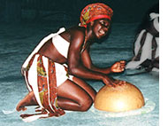

Wasa Wombe:
Ручной шейкер, который производит рассыпчатый звук, близкий maracas или castanets. Инструмент сделан из палки в форме буквы "L", на которую нанизаны 7-9 концентрических дисков из calabash от 2 до 4 дюймов в диаметре.  Water Drums: 1. Природный иструмент, возникающий при ритмичных ударах руками по поверхности воды. Несмотря на простоту производит удивительное разнообразие мелодических и ритмических звуков. Широко распространен в музыке Лесных людей Baka юго-западного Камеруна.2. Восточно-африканские gourd-барабаны. При изготовлении инструмента gourd разрезают пополам, очищают от сердцевины и тщательно высушивают. Большую из половинок наполняют водой, в которую помещают перевернутую вторую. Как вариант, большую половину ставят в приливную волну. |